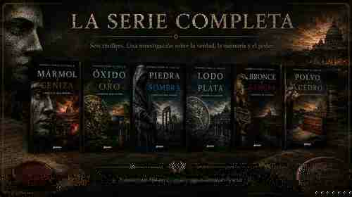
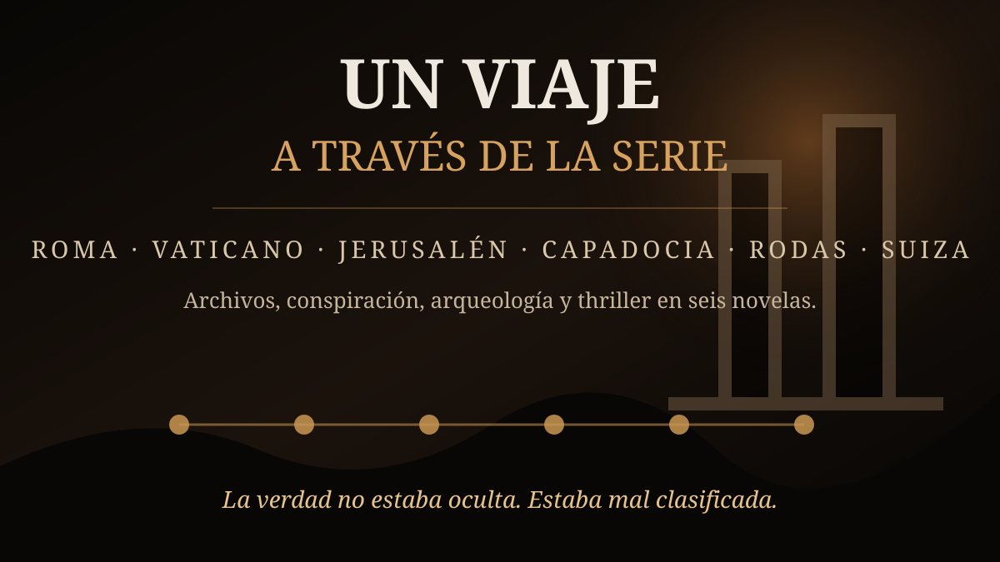
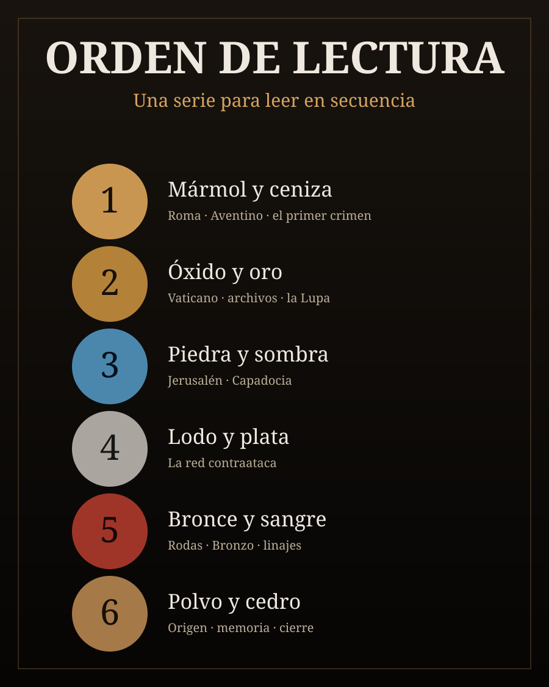

Mármol y ceniza
Un arquitecto asesinado, un yacimiento bajo el Aventino y la primera huella de una red más profunda.
La verdad no estaba oculta. Estaba mal clasificada.
Seis thrillers conectados por una investigación que atraviesa Roma, el Vaticano, Jerusalén, Capadocia, Rodas y Suiza. Crimen, patrimonio, arqueología, archivos y una lucha por decidir qué versión del pasado merece sobrevivir.
Sombras sobre el Tíber combina el suspense del thriller con investigación criminal, arqueología y procedencia documental. El misterio no depende de una revelación arbitraria, sino de pruebas, archivos, restauraciones, contradicciones y decisiones humanas.
Desde el Aventino hasta el Mediterráneo oriental, cada hallazgo amplía una pregunta inquietante: ¿qué ocurre cuando custodiar la historia termina significando controlar su significado?
«Los secretos más peligrosos no siempre se esconden. A veces se archivan.»

Sombras sobre el Tíber es una serie completa de seis thrillers de Lorenzo Malipiero. La acción principal es contemporánea y combina investigación criminal, arqueología, patrimonio cultural, archivos y conspiración histórica.
Desde un asesinato bajo las piedras de Roma hasta documentos capaces de alterar el sentido de todo lo investigado, cada volumen abre una nueva capa del misterio y eleva las consecuencias de conocer la verdad.
Un arquitecto asesinado, un yacimiento bajo el Aventino y la primera huella de una red más profunda.
Un cardenal muerto deja una carta que conduce al Vaticano, a Fiamma Alberti y a la Lupa.
Jerusalén y Capadocia expanden la investigación hacia archivos, restauraciones y versiones enfrentadas.
La red contraataca y la amenaza deja de ser únicamente documental.
Rodas, el Egeo y Bronzo ponen a prueba linajes, herencia y continuidad histórica.
Una caja de cedro y documentos de posguerra conducen al cierre de la saga.

La investigación avanza a través de personajes obligados a decidir hasta dónde están dispuestos a llegar cuando las pruebas dejan de ser abstractas y empiezan a afectar a sus propias vidas.
Paciente, incisivo y obsesionado con separar lo demostrable de lo seductor.
Su relación con los archivos convierte el conflicto histórico en algo profundamente personal.
Procedimiento, precisión y lucidez frente a una investigación que no deja de crecer.
La convicción de que conservar la memoria puede otorgar el derecho a seleccionar qué parte de ella sobrevivirá.

Cada novela modifica la percepción de la anterior y prepara el sentido de la siguiente. La experiencia ideal comienza en Roma y avanza hasta el cierre definitivo de la investigación.
Una serie completa de seis thrillers de Lorenzo Malipiero que combina investigación criminal, conspiración histórica, arqueología, archivos y patrimonio cultural.
Mármol y ceniza, Óxido y oro, Piedra y sombra, Lodo y plata, Bronce y sangre y Polvo y cedro.
Sí. Los seis volúmenes forman un arco completo.
La acción principal es contemporánea. El pasado, los archivos y la arqueología son objetos de investigación, por lo que la saga combina thriller contemporáneo con misterio y conspiración histórica.
Roma, Vaticano, Jerusalén, Capadocia, Rodas, el Egeo, Italia y Suiza.
Seis novelas, una investigación completa y un pasado que se vuelve más peligroso cuanto más cerca parece estar la verdad.
Descubrir la serie completa